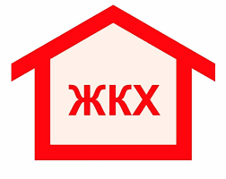

Вход{{login}} {{password}}
ТСЖ Чебоксары
Правительство утвердило предельный рост цен на ЖКХ в 2020 году
МОСКВА, 30 окт — РИА Недвижимость. Правительство России утвердило максимальные индексы повышения тарифов ЖКХ в 2020 году. В частности, в Москве стоимость услуг ЖКХ с 1 июля повысится максимум на 5 процентов, Подмосковье — на 4,1 процента, Санкт-Петербурге — на 3,8 процента. Максимальный индекс платы за коммунальные услуги для Бурятии, Дагестана, Ингушетии и Кабардино-Балкарии установлен в пределе 5-5,4 процента, для Чечни — 6,5 процента. В последнем случае это самый большой показатель среди российских регионов. Самый незначительный рост тарифов ЖКХ среди регионов России произойдет в Ненецком автономном округе — 2,4 процента, следует из распоряжения правительства. В остальных регионах тарифы вырастут на 3,6-4,9 процента.